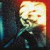
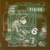
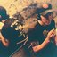
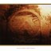

MUSIC / FILMS
Music + Films
Records, films, and my notes.
From my Last.fm library

98.12.28 男達の別れ (Live)Fishmans
DoolittlePixies
Either/OrElliott SmithSelected Ambient Works 85-92Aphex Twin
Selected Ambient Works Volume IIAphex TwinLibrary snapshot · 2026-10-10 · View current library ↗
WATCH NOTES / 2026-10-09
Manhunter (1986)
Great 80's Michael Mann, beautiful oldschool Synthwave and detective work go hand in hand.
Watch the linked videoPOSTER ARCHIVE